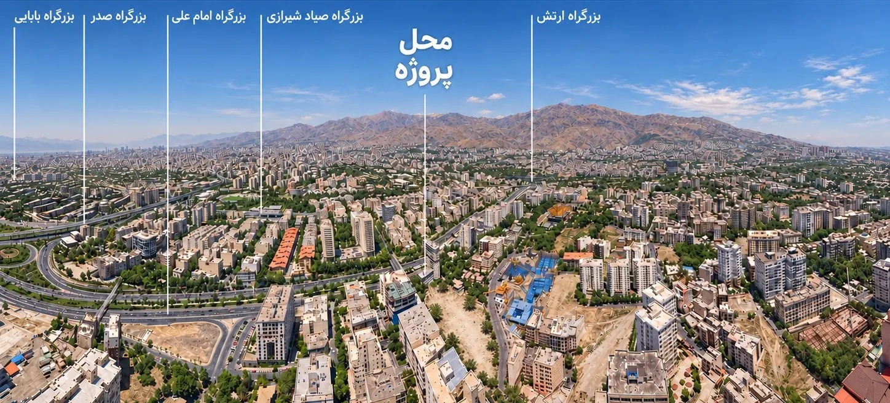

Between the city and calm.
Ozgol, within Tehran: urban access beside a calmer setting for everyday life.

Five main routes.
Connected to the Babaee, Sadr, Imam Ali, Sayyad Shirazi and Artesh routes.
No. 6, at the start of Parvin Street, Golshan Sharghi / Parvin intersection, Ozgol, Tehran.
- Babaee
- Sadr
- Imam Ali
- Sayyad Shirazi
- Artesh
Aerial image as supplied; pointers are indicative. The exact address and directions are confirmed with the sales team.
Around the project
Public transport
Aghdasieh Metro; Aghdasieh three-way bus station.
Green spaces
Lavizan, Shian and Valiasr parks.
Healthcare
Nikan; Farhangian; Bahonar; Farmaniyeh.
Road connections
Imam Ali; Shahid Sayyad Shirazi; Shahid Sadr; Shahid Babaee.
Local streets
Aghdasieh; Sepand; Firouzbakhsh; Amir Bahador; Golzar; Teymouri; Sanaye.
Dining
Aghdasieh; Red Robin; Marchoobeh; An Do; Arg-e Sharghi; Aquarium; Serge; Bagh-e Salam; Noor; Jazireh; Narenjestan; Pideh & Lahmajoun; Chelcheleh.
Schematic map, not to scale. Place names and positions are indicative.
Arrange an in-person visit
The exact address and directions are given after arranging with the sales team.